Comparer les équipements et retrouver les usages des objets du jeu.
Les règles de ce thème
Lire le catalogue
Ce catalogue réunit les 88 équipements ordinaires du jeu, les huit reliques royales et les autres références officielles. La présence dans cette liste ne garantit pas un objet disponible dans votre partie : le scénario, les offres, les récompenses et les quotas déterminent son accès.
Le héros conserve huit emplacements : tête, cou, corps, main principale, main gauche, pieds et deux accessoires. Jambes et pieds partagent un seul emplacement. Les bonus indiqués sont ceux de l’objet, avant leur addition aux statistiques du héros. Aucune rareté légendaire n’est actuellement implémentée.
Armes de mêlée
| Objet | Emplacement | Classes | Rareté | Bonus | Mains | Prix de base (or) | Quota mondial |
|---|---|---|---|---|---|---|---|
 | Main principale | Guerrier, Éclaireur | Commun | +2 attaque | 1 | 18 | 6 |
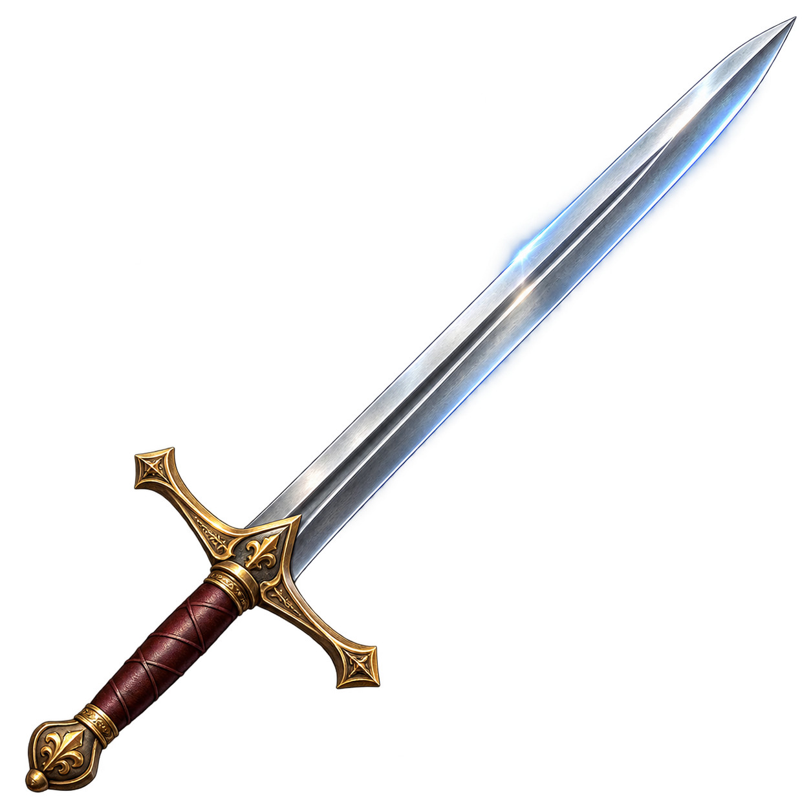 | Main principale | Guerrier, Éclaireur | Commun | +4 attaque | 1 | 24 | 6 |
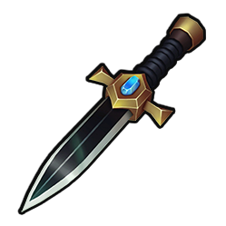 | Main principale | Éclaireur | Peu commun | +2 attaque, +1 mobilité | 1 | 33 | 3 |
 | Main principale | Guerrier | Peu commun | +3 attaque, +1 commandement | 1 | 36 | 3 |
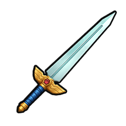 | Main principale | Guerrier | Rare | +4 attaque, +1 moral | 1 | 51 | 1 |
Le prix de base ne représente pas toutes les offres : le recéleur applique une majoration. Le quota limite les nouvelles émissions de cette référence, toutes sources ordinaires confondues ; il ne supprime pas les objets historiques ou placés par scénario.
Arcs et arbalètes
| Objet | Emplacement | Classes | Rareté | Bonus | Mains | Prix de base (or) | Quota mondial |
|---|---|---|---|---|---|---|---|
 | Main principale | Guerrier, Éclaireur | Commun | +2 attaque | 2 | 18 | 6 |
 | Main principale | Éclaireur | Commun | +2 attaque, +1 mobilité | 2 | 21 | 6 |
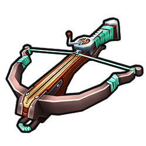 | Main principale | Guerrier, Éclaireur | Peu commun | +4 attaque | 2 | 36 | 3 |
 | Main principale | Éclaireur | Peu commun | +3 attaque, +1 défense | 2 | 36 | 3 |
 | Main principale | Éclaireur | Rare | +4 attaque, +2 mobilité | 2 | 54 | 1 |
Le prix de base ne représente pas toutes les offres : le recéleur applique une majoration. Le quota limite les nouvelles émissions de cette référence, toutes sources ordinaires confondues ; il ne supprime pas les objets historiques ou placés par scénario.
Armes de jet
| Objet | Emplacement | Classes | Rareté | Bonus | Mains | Prix de base (or) | Quota mondial |
|---|---|---|---|---|---|---|---|
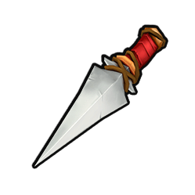 | Main principale | Guerrier, Éclaireur, Mage | Commun | +1 attaque | 1 | 15 | 6 |
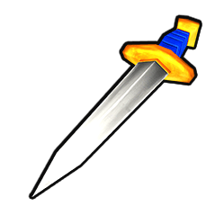 | Main principale | Guerrier, Éclaireur | Commun | +2 attaque | 1 | 18 | 6 |
 | Main principale | Guerrier, Éclaireur | Peu commun | +2 attaque, +1 défense | 1 | 33 | 3 |
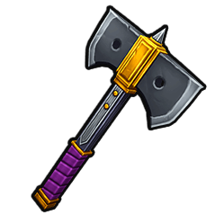 | Main principale | Guerrier | Peu commun | +4 attaque, -1 défense | 1 | 36 | 3 |
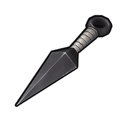 | Main principale | Éclaireur | Rare | +3 attaque, +1 mobilité | 1 | 48 | 1 |
Le prix de base ne représente pas toutes les offres : le recéleur applique une majoration. Le quota limite les nouvelles émissions de cette référence, toutes sources ordinaires confondues ; il ne supprime pas les objets historiques ou placés par scénario.
Bâtons
| Objet | Emplacement | Classes | Rareté | Bonus | Mains | Prix de base (or) | Quota mondial |
|---|---|---|---|---|---|---|---|
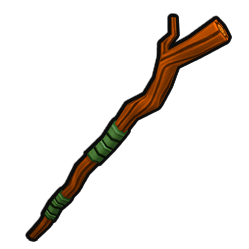 | Main principale | Mage | Commun | +1 attaque, +1 défense | 2 | 18 | 6 |
 | Main principale | Mage | Commun | +3 attaque | 2 | 21 | 6 |
 | Main principale | Mage | Peu commun | +2 défense, +5 santé maximale | 2 | 45 | 3 |
 | Main principale | Mage | Peu commun | +2 commandement, +1 moral | 2 | 33 | 3 |
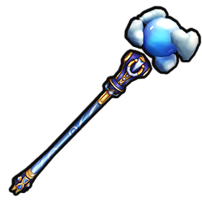 | Main principale | Mage | Rare | +3 attaque, +2 défense, +1 commandement | 2 | 54 | 1 |
Le prix de base ne représente pas toutes les offres : le recéleur applique une majoration. Le quota limite les nouvelles émissions de cette référence, toutes sources ordinaires confondues ; il ne supprime pas les objets historiques ou placés par scénario.
Boucliers
| Objet | Emplacement | Classes | Rareté | Bonus | Mains | Prix de base (or) | Quota mondial |
|---|---|---|---|---|---|---|---|
 | Main gauche | Guerrier, Éclaireur | Commun | +2 défense | 1 | 18 | 6 |
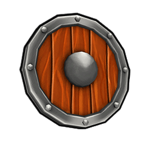 | Main gauche | Guerrier, Éclaireur | Commun | +1 défense, +1 mobilité | 1 | 18 | 6 |
 | Main gauche | Guerrier | Peu commun | +2 défense, +1 commandement | 1 | 33 | 3 |
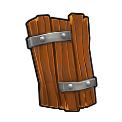 | Main gauche | Guerrier | Peu commun | +4 défense, -1 mobilité | 1 | 36 | 3 |
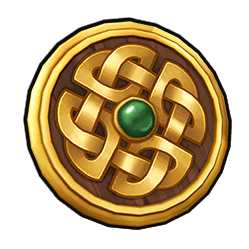 | Main gauche | Guerrier | Rare | +3 défense, +1 moral | 1 | 48 | 1 |
| Main gauche | Éclaireur | Rare | +2 défense, +1 mobilité | 1 | 45 | 1 |
Le prix de base ne représente pas toutes les offres : le recéleur applique une majoration. Le quota limite les nouvelles émissions de cette référence, toutes sources ordinaires confondues ; il ne supprime pas les objets historiques ou placés par scénario.
Focaliseurs
| Objet | Emplacement | Classes | Rareté | Bonus | Mains | Prix de base (or) | Quota mondial |
|---|---|---|---|---|---|---|---|
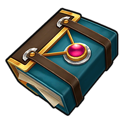 | Main gauche | Mage | Commun | +1 attaque | 1 | 15 | 6 |
 | Main gauche | Mage | Commun | +2 défense | 1 | 18 | 6 |
 | Main gauche | Mage | Peu commun | +5 santé maximale, +1 moral | 1 | 42 | 3 |
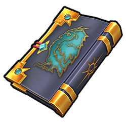 | Main gauche | Mage | Peu commun | +2 commandement | 1 | 30 | 3 |
 | Main gauche | Mage | Rare | +1 attaque, +1 défense, +1 mobilité | 1 | 45 | 1 |
Le prix de base ne représente pas toutes les offres : le recéleur applique une majoration. Le quota limite les nouvelles émissions de cette référence, toutes sources ordinaires confondues ; il ne supprime pas les objets historiques ou placés par scénario.
Casques
| Objet | Emplacement | Classes | Rareté | Bonus | Mains | Prix de base (or) | Quota mondial |
|---|---|---|---|---|---|---|---|
 | Tête | Guerrier, Éclaireur | Commun | +1 défense | 0 | 15 | 6 |
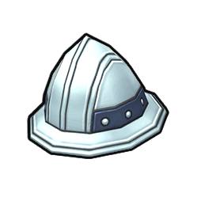 | Tête | Guerrier, Éclaireur | Commun | +2 défense | 0 | 18 | 6 |
 | Tête | Guerrier | Peu commun | +2 défense, +1 moral | 0 | 33 | 3 |
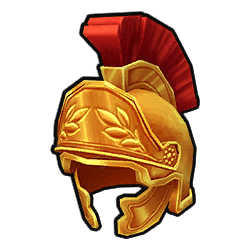 | Tête | Guerrier | Peu commun | +1 défense, +2 commandement | 0 | 33 | 3 |
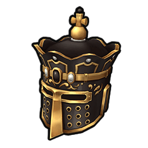 | Tête | Guerrier | Rare | +3 défense, +5 santé maximale, -1 mobilité | 0 | 60 | 1 |
Le prix de base ne représente pas toutes les offres : le recéleur applique une majoration. Le quota limite les nouvelles émissions de cette référence, toutes sources ordinaires confondues ; il ne supprime pas les objets historiques ou placés par scénario.
Capuches
| Objet | Emplacement | Classes | Rareté | Bonus | Mains | Prix de base (or) | Quota mondial |
|---|---|---|---|---|---|---|---|
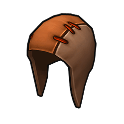 | Tête | Guerrier, Éclaireur, Mage | Commun | +1 moral | 0 | 15 | 6 |
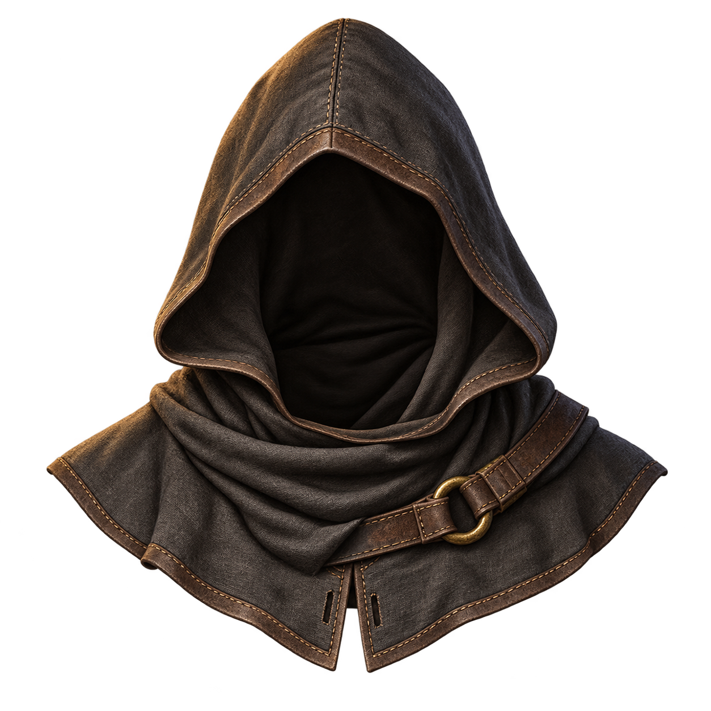 | Tête | Éclaireur | Commun | +1 mobilité | 0 | 15 | 6 |
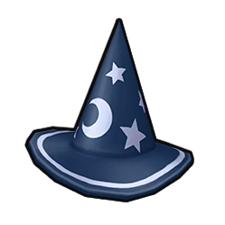 | Tête | Mage | Peu commun | +1 attaque, +1 défense | 0 | 30 | 3 |
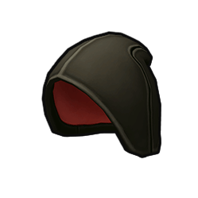 | Tête | Éclaireur | Peu commun | +2 mobilité | 0 | 30 | 3 |
 | Tête | Mage | Rare | +2 commandement, +1 moral | 0 | 45 | 1 |
| Tête | Éclaireur | Rare | +1 défense, +2 mobilité | 0 | 45 | 1 |
Le prix de base ne représente pas toutes les offres : le recéleur applique une majoration. Le quota limite les nouvelles émissions de cette référence, toutes sources ordinaires confondues ; il ne supprime pas les objets historiques ou placés par scénario.
Armures lourdes
| Objet | Emplacement | Classes | Rareté | Bonus | Mains | Prix de base (or) | Quota mondial |
|---|---|---|---|---|---|---|---|
 | Corps | Guerrier | Commun | +3 défense, -1 mobilité | 0 | 21 | 6 |
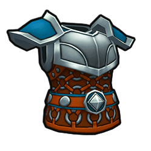 | Corps | Guerrier | Commun | +2 défense, +5 santé maximale | 0 | 33 | 6 |
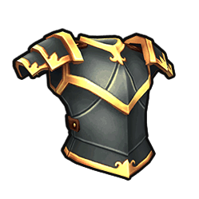 | Corps | Guerrier | Peu commun | +3 défense, +1 commandement, -1 mobilité | 0 | 36 | 3 |
 | Corps | Guerrier | Peu commun | +4 défense, +1 moral, -1 mobilité | 0 | 39 | 3 |
 | Corps | Guerrier | Rare | +5 défense, +10 santé maximale, -2 mobilité | 0 | 81 | 1 |
Le prix de base ne représente pas toutes les offres : le recéleur applique une majoration. Le quota limite les nouvelles émissions de cette référence, toutes sources ordinaires confondues ; il ne supprime pas les objets historiques ou placés par scénario.
Armures légères
| Objet | Emplacement | Classes | Rareté | Bonus | Mains | Prix de base (or) | Quota mondial |
|---|---|---|---|---|---|---|---|
 | Corps | Guerrier, Éclaireur | Commun | +1 défense, +1 mobilité | 0 | 18 | 6 |
 | Corps | Guerrier, Éclaireur, Mage | Commun | +1 défense, +5 santé maximale | 0 | 30 | 6 |
 | Corps | Guerrier, Éclaireur | Peu commun | +2 défense | 0 | 30 | 3 |
 | Corps | Éclaireur | Peu commun | +1 défense, +2 mobilité | 0 | 33 | 3 |
 | Corps | Éclaireur | Rare | +3 défense, +1 mobilité | 0 | 48 | 1 |
Le prix de base ne représente pas toutes les offres : le recéleur applique une majoration. Le quota limite les nouvelles émissions de cette référence, toutes sources ordinaires confondues ; il ne supprime pas les objets historiques ou placés par scénario.
Robes
| Objet | Emplacement | Classes | Rareté | Bonus | Mains | Prix de base (or) | Quota mondial |
|---|---|---|---|---|---|---|---|
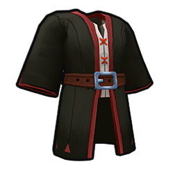 | Corps | Mage | Commun | +1 défense | 0 | 15 | 6 |
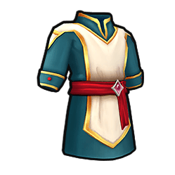 | Corps | Mage | Commun | +2 défense, +5 santé maximale | 0 | 33 | 6 |
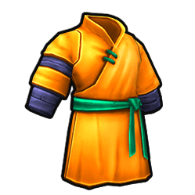 | Corps | Mage | Peu commun | +2 attaque, +1 défense | 0 | 33 | 3 |
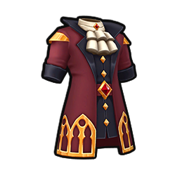 | Corps | Mage | Peu commun | +2 commandement, +1 moral | 0 | 33 | 3 |
 | Corps | Mage | Rare | +2 attaque, +2 défense, +5 santé maximale | 0 | 63 | 1 |
Le prix de base ne représente pas toutes les offres : le recéleur applique une majoration. Le quota limite les nouvelles émissions de cette référence, toutes sources ordinaires confondues ; il ne supprime pas les objets historiques ou placés par scénario.
Manteaux
| Objet | Emplacement | Classes | Rareté | Bonus | Mains | Prix de base (or) | Quota mondial |
|---|---|---|---|---|---|---|---|
 | Accessoire | Guerrier, Éclaireur, Mage | Commun | +5 santé maximale | 0 | 27 | 6 |
 | Accessoire | Guerrier, Éclaireur, Mage | Commun | +1 mobilité, +1 moral | 0 | 18 | 6 |
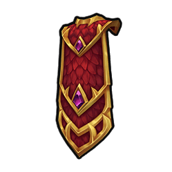 | Accessoire | Guerrier | Peu commun | +2 commandement | 0 | 30 | 3 |
 | Accessoire | Éclaireur | Peu commun | +2 mobilité | 0 | 30 | 3 |
 | Accessoire | Mage | Rare | +1 attaque, +1 défense, +1 moral | 0 | 45 | 1 |
Le prix de base ne représente pas toutes les offres : le recéleur applique une majoration. Le quota limite les nouvelles émissions de cette référence, toutes sources ordinaires confondues ; il ne supprime pas les objets historiques ou placés par scénario.
Bottes
| Objet | Emplacement | Classes | Rareté | Bonus | Mains | Prix de base (or) | Quota mondial |
|---|---|---|---|---|---|---|---|
 | Pieds / jambes | Guerrier, Éclaireur, Mage | Commun | +2 mobilité | 0 | 18 | 6 |
 | Pieds / jambes | Guerrier | Commun | +1 défense, +1 mobilité | 0 | 18 | 6 |
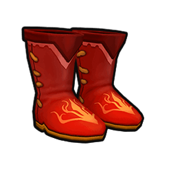 | Pieds / jambes | Éclaireur | Peu commun | +2 mobilité, +1 attaque | 0 | 33 | 3 |
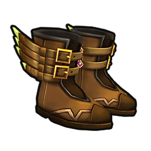 | Pieds / jambes | Guerrier, Éclaireur, Mage | Peu commun | +1 mobilité, +5 santé maximale | 0 | 42 | 3 |
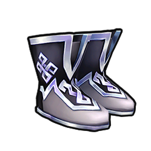 | Pieds / jambes | Mage | Rare | +2 mobilité, +1 défense | 0 | 45 | 1 |
Le prix de base ne représente pas toutes les offres : le recéleur applique une majoration. Le quota limite les nouvelles émissions de cette référence, toutes sources ordinaires confondues ; il ne supprime pas les objets historiques ou placés par scénario.
Anneaux
| Objet | Emplacement | Classes | Rareté | Bonus | Mains | Prix de base (or) | Quota mondial |
|---|---|---|---|---|---|---|---|
 | Accessoire | Guerrier, Éclaireur, Mage | Commun | +1 moral | 0 | 15 | 6 |
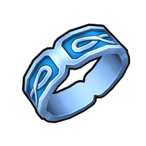 | Accessoire | Guerrier, Éclaireur, Mage | Commun | +1 défense | 0 | 15 | 6 |
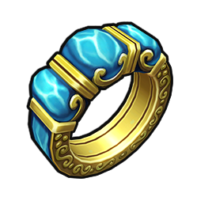 | Accessoire | Guerrier, Éclaireur, Mage | Peu commun | +5 santé maximale | 0 | 39 | 3 |
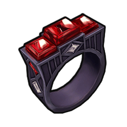 | Accessoire | Guerrier, Éclaireur | Peu commun | +2 attaque | 0 | 30 | 3 |
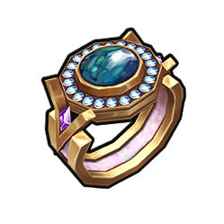 | Accessoire | Mage | Rare | +1 attaque, +1 commandement | 0 | 42 | 1 |
| Accessoire | Guerrier | Rare | +1 défense, +2 moral | 0 | 45 | 1 |
| Accessoire | Éclaireur | Rare | +1 attaque, +1 mobilité | 0 | 42 | 1 |
Le prix de base ne représente pas toutes les offres : le recéleur applique une majoration. Le quota limite les nouvelles émissions de cette référence, toutes sources ordinaires confondues ; il ne supprime pas les objets historiques ou placés par scénario.
Colliers
| Objet | Emplacement | Classes | Rareté | Bonus | Mains | Prix de base (or) | Quota mondial |
|---|---|---|---|---|---|---|---|
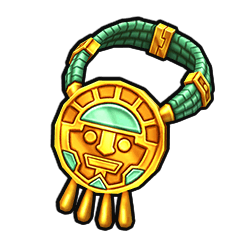 | Cou | Guerrier, Éclaireur, Mage | Commun | +1 commandement, +1 moral | 0 | 18 | 6 |
 | Cou | Guerrier, Éclaireur, Mage | Commun | +5 santé maximale | 0 | 27 | 6 |
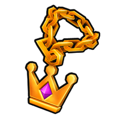 | Cou | Guerrier | Peu commun | +2 attaque, +1 commandement | 0 | 33 | 3 |
 | Cou | Éclaireur | Peu commun | +2 mobilité, +1 moral | 0 | 33 | 3 |
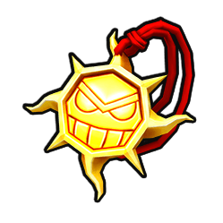 | Cou | Mage | Rare | +1 attaque, +1 défense, +1 commandement | 0 | 45 | 1 |
| Cou | Guerrier | Rare | +1 défense, +2 commandement | 0 | 45 | 1 | |
| Cou | Éclaireur | Rare | +2 mobilité, +1 moral | 0 | 45 | 1 |
Le prix de base ne représente pas toutes les offres : le recéleur applique une majoration. Le quota limite les nouvelles émissions de cette référence, toutes sources ordinaires confondues ; il ne supprime pas les objets historiques ou placés par scénario.
Chausses, grèves et jambières
| Objet | Emplacement | Classes | Rareté | Bonus | Mains | Prix de base (or) | Quota mondial |
|---|---|---|---|---|---|---|---|
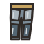 | Pieds / jambes | Guerrier, Éclaireur, Mage | Commun | +5 santé maximale | 0 | 27 | 6 |
| Pieds / jambes | Guerrier, Éclaireur | Commun | +1 défense | 0 | 15 | 6 | |
| Pieds / jambes | Guerrier | Peu commun | +2 défense | 0 | 30 | 3 | |
| Pieds / jambes | Éclaireur | Peu commun | +1 défense, +1 mobilité | 0 | 30 | 3 | |
| Pieds / jambes | Mage | Rare | +1 défense, +5 santé maximale, +1 commandement | 0 | 57 | 1 | |
| Pieds / jambes | Guerrier | Rare | +3 défense, -1 mobilité | 0 | 45 | 1 | |
| Pieds / jambes | Éclaireur | Rare | +1 défense, +2 mobilité | 0 | 45 | 1 |
Le prix de base ne représente pas toutes les offres : le recéleur applique une majoration. Le quota limite les nouvelles émissions de cette référence, toutes sources ordinaires confondues ; il ne supprime pas les objets historiques ou placés par scénario.
Reliques royales
Ces huit pièces relèvent de la distribution royale existante et sont exclues des tirages ordinaires. Elles ne constituent pas un palier légendaire.
| Objet | Emplacement | Bonus |
|---|---|---|
 | Tête | +3 défense |
 | Cou | +2 commandement |
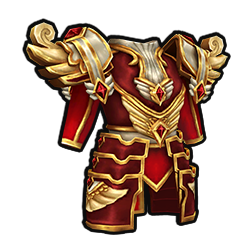 | Corps | +5 défense |
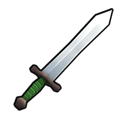 | Main principale | +6 attaque |
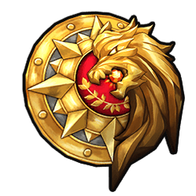 | Main gauche | +4 défense |
 | Pieds / jambes | +2 mobilité |
| Accessoire | +3 moral |
| Accessoire | +2 attaque, +1 commandement |
Ressources, consommables et objets de scénario
Les documents peuvent partager un nom tout en ayant des identifiants distincts. Les spécialistes et personnages transportés ne sont pas des équipements portés. Les usages de quête dépendent du scénario.
| Objet | Référence | Usage |
|---|---|---|
| Message écrit | message | Peut être lu, transporté ou remis selon son contenu. |
| Message écrit | written_message | Peut être lu, transporté ou remis selon son contenu. |
| Message scellé | sealed_fort_message | Peut être lu, transporté ou remis selon son contenu. |
| Parchemin | parchment | Peut être lu, transporté ou remis selon son contenu. |
| Papier | paper | Peut être lu, transporté ou remis selon son contenu. |
| Parchemin | scroll | Peut être lu, transporté ou remis selon son contenu. |
| Lettre | letter | Peut être lu, transporté ou remis selon son contenu. |
| Mandat d’autorité | authority_writ | Équiper dans un emplacement d’accessoire : +3 autorité, soit une unité de lanciers au grade Soldat. |
| Or | gold | Sert à recruter, commercer et financer certains développements. |
| Bois | wood | Sert principalement à construire et améliorer les bâtiments. |
| Pierre | stone | Sert aux constructions durables et aux fortifications. |
| Fer | iron | Sert à fabriquer ou renforcer l’équipement et les installations militaires. |
| Nourriture | food | Évite la faim et accorde +1 moral pendant sa période d’effet. |
| Bière | beer | Accorde +2 moral mais réduit temporairement la défense de 1. |
| Chevaux | horse | Utilisables pour les convois, la prospection et le recrutement des unités de cavalerie. |
| Outils d’exploration | exploration_tools | Requis pour lancer une mission de prospection. |
| Géologue | specialist_geologist | Peut diriger une mission de prospection. |
| Cartographe | specialist_cartographer | Peut diriger une mission de prospection. |
| Aventurier | specialist_adventurer | Peut diriger une mission de prospection. |
| Mineur aguerri | specialist_miner | Augmente la production de fer lorsqu’il est déposé dans un lieu producteur. |
| Bûcheron aguerri | specialist_lumberjack | Augmente la production de bois lorsqu’il est déposé dans un lieu producteur. |
| Maître fermier | specialist_farmer | Augmente la production de nourriture lorsqu’il est déposé dans un lieu producteur. |
| Officier instructeur | officer_drill | Peut être appliqué à une unité pour lui donner 40 XP. |
| Capitaine vétéran | officer_veteran | Peut être appliqué à une unité pour lui donner 80 XP. |
| Population | population | Doit être conduit vers un lieu sûr pouvant les accueillir. |
| Géologue royal | royal_geologist | Personnage de quête à escorter jusqu’à sa destination. |
| Rapport incomplet des prospecteurs | incomplete_mine_report | Objet de quête fournissant un indice sur leur disparition. |
| Rapport sur la mine | abandoned_mine_report | Objet de quête à remettre aux autorités royales. |
Obtenir et porter un objet
Les équipements ordinaires peuvent provenir des commerces, de la forge, du recéleur et des récompenses compatibles. Toutes les familles ne sont pas forgeables et une recette dans la fiche ne garantit pas une commande disponible. Consultez les règles d’équipement pour les sources et leurs conditions.
Les armes à deux mains occupent les deux mains. Un seul manteau peut être porté ; les deux accessoires doivent respecter les incompatibilités. La santé maximale supplémentaire ne soigne pas le héros. Les pièces de pieds et de jambes se remplacent sans cumul.